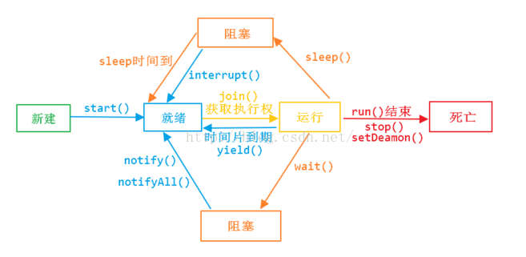

java多线程
线程和进程
概念
- 进程是具有一定独立功能的程序关于某个数据集合上的一次运行活动,进程是系统进行资源分配和调度的一个独立单位。
- 线程是进程的一个实体,是CPU调度和分派的基本单位,它是比进程更小的能独立运行的基本单位.
区别 1) 一个程序至少有一个进程,一个进程至少有一个线程. 2) 线程的划分尺度小于进程，线程必进程更轻量级，使得多线程程序的并发性高。 3) 进程在执行过程中拥有独立的内存单元，而多个线程共享内存，从而极大地提高了程序的运行效率。 4) 线程在执行过程中与进程还是有区别的。每个独立的线程有一个程序运行的入口、顺序执行序列和程序的出口。但是线程不能够独立执行，必须依存在应用程序中，由应用程序提供多个线程执行控制。 5) 从逻辑角度来看，多线程的意义在于一个应用程序中，有多个执行部分可以同时执行。但操作系统并没有将多个线程看做多个独立的应用，来实现进程的调度和管理以及资源分配。这就是进程和线程的重要区别。
什么时候使用多线程？什么时候使用单线程？
java多线程的缺点？
- 代码复杂
- 加锁操作严重影响性能
线程的实现方式？java线程是如何实现的？
线程的生命周期

- 新建状态
- 就绪状态
- 运行状态
- 阻塞状态
- 死亡状态
如何启动和销毁线程
- 使用start方法启动线程
- 销毁线程有三种
- 使用变量标志
- 使用stop（不推荐使用）
- 使用interrupt
如何判断线程的状态
interrupt、interrupted 、isInterrupted 区别
- interrupt()进行线程中断，调用该方法的线程的状态为将被置为"中断"状态
- interrupted 是作用于当前线程，会清除中断状态
- isInterrupted 是作用于调用该方法的线程对象所对应的线程
多线程的实现方式
- 继承Thread类
- 实现Runnable接口
同步的方式
- syncronized方法
- lock
死锁
死锁是指多个进程循环等待它方占有的资源而无限期地僵持下去的局面。
实现生产者消费者
public class Restaurant {
Meal meal;
WaitPerson waitPerson = new WaitPerson(this);
ExecutorService exec = Executors.newCachedThreadPool();
Chef chef = new Chef(this);
public Restaurant(){
exec.execute(waitPerson);
exec.execute(chef);
}
public static void main(String[] args) {
new Restaurant();
}
}
class Meal{
private final int orderNum;
public Meal(int orderNum){
this.orderNum = orderNum;
}
@Override
public String toString() {
return "Meal "+ orderNum;
}
}
class WaitPerson implements Runnable{
private Restaurant restaurant;
public WaitPerson(Restaurant r){
this.restaurant = r;
}
@Override
public void run() {
try {
while(!Thread.interrupted()){
synchronized (this){
while (restaurant.meal==null){
wait();
}
System.out.println("waitPerson get"+ restaurant.meal);
}
synchronized (restaurant.chef){
restaurant.meal = null;
restaurant.chef.notifyAll();
}
}
}catch (InterruptedException e){
System.out.println(" waitPerson interrupted");
}
}
}
class Chef implements Runnable{
private Restaurant restaurant;
private int count = 0;
public Chef(Restaurant r){
this.restaurant = r;
}
@Override
public void run() {
try {
while(!Thread.interrupted()){
synchronized (this){
while (restaurant.meal!=null){
wait();
}
}
if(++count == 10){
System.out.println("out of food, closing");
restaurant.exec.shutdownNow();
}
System.out.println("Order up!");
synchronized (restaurant.waitPerson){
restaurant.meal = new Meal(count);
restaurant.waitPerson.notifyAll();
}
TimeUnit.MILLISECONDS.sleep(100);
}
}catch (InterruptedException e){
System.out.println(" chef interrupted");
}
}
}
CAS操作与ABA问题
CAS操作是jdk新的cpu指令，